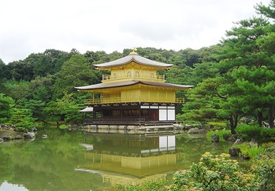
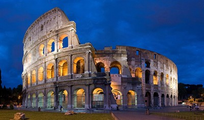
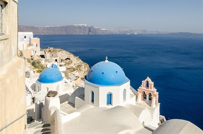
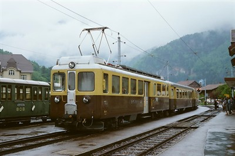
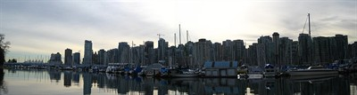

Kyoto was the capital of Japan for more than a thousand years and it still keeps that old look with its temples, wooden houses and gardens. I want to go because it is the best mix I know of tradition and technology.

Rome is a whole museum you can walk through. The Colosseum, the Pantheon and the Roman Forum are still standing after two thousand years, and the food is from my favorite cuisine.

Santorini is a Greek island built on the edge of an old volcano. The white houses with blue roofs over the cliffs are probably the most famous view in the Mediterranean.

Interlaken is a small town in the Swiss Alps sitting between two lakes. It is the base camp for the mountains around it and one of the calmest places I have seen in a picture.

Vancouver has the ocean, the mountains and a big tech industry in the same city. It is the place I would pick if I ever move out of Mexico to work.